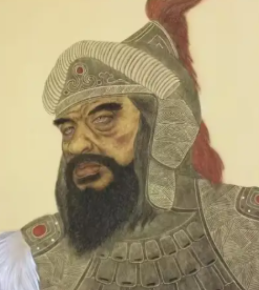

人物简介

姓名：
拓跋焘
所属朝代：
北魏（南北朝时期）
出生地：
代郡平城（今山西大同）
所属民族：
鲜卑族
性别：
男
职务：
北魏第三位皇帝（423年-452年在位）
人物生平
早年经历
拓跋焘（408年-452年），字佛狸伐，鲜卑名乌戈真，北魏明元帝拓跋嗣长子。自幼聪慧过人，五岁被立为太子，十六岁继位。他继位时北魏面临着北方柔然、南方刘宋的双重威胁。
统一北方
拓跋焘即位后，展现出卓越的军事才能。他先后攻灭夏国、北燕、北凉等割据政权，于439年统一中国北方，结束了五胡十六国混乱局面。他亲率大军多次北伐柔然，使"柔然远遁，漠南无王庭"。
政治改革
拓跋焘在政治上也进行了重要改革：设立中书省加强中央集权；推行"太和改制"，改革官制；重视农业生产，减轻赋税；任用汉族士人崔浩等，促进汉化进程。
晚年与去世
拓跋焘晚年因猜忌心理加重，发生了"国史之狱"，诛杀崔浩等大臣。452年，被宦官宗爱所弑，终年45岁，谥号太武皇帝，庙号世祖。
对中华民族共同体的贡献
拓跋焘作为鲜卑族皇帝，在统一北方过程中积极推行民族融合政策：
1. 打破民族界限，大量任用汉族士人参与政权管理，如崔浩、高允等
2. 推行汉化政策，设立太学，鼓励鲜卑贵族学习汉族文化
3. 实行胡汉通婚政策，促进民族间血缘融合
4. 改革官制，采用汉族政治制度与法律体系
5. 保护佛教文化，在云冈开凿石窟，促进多民族文化交融
这些措施为后来孝文帝全面汉化改革奠定了基础，加速了北方各民族与汉族的融合进程，对中华民族共同体的形成具有重要历史意义。
诗文集录
拓跋焘虽为鲜卑族帝王，但深受汉文化熏陶，其诗作体现了民族融合的思想：
《饮马长城窟行》
塞外悲风切，交河冰已结。
瀚海百重波，阴山千里雪。
迥戍危烽火，层峦引高节。
悠悠卷旆旌，饮马出长城。
寒沙连骑迹，朔吹断边声。
胡尘清玉塞，羌笛韵金钲。
绝漠干戈戢，车徒振原隰。
都尉反龙堆，将军旋马邑。
扬麾氛雾静，纪石功名立。
荒裔一戎衣，灵台凯歌入。
瀚海百重波，阴山千里雪。
迥戍危烽火，层峦引高节。
悠悠卷旆旌，饮马出长城。
寒沙连骑迹，朔吹断边声。
胡尘清玉塞，羌笛韵金钲。
绝漠干戈戢，车徒振原隰。
都尉反龙堆，将军旋马邑。
扬麾氛雾静，纪石功名立。
荒裔一戎衣，灵台凯歌入。
《与南朝使臣诗》
南北虽殊途，山河本一体。
胡汉本同源，共沐天地辉。
弓马定北疆，诗书传华夏。
愿化干戈帛，同筑太平基。
胡汉本同源，共沐天地辉。
弓马定北疆，诗书传华夏。
愿化干戈帛，同筑太平基。